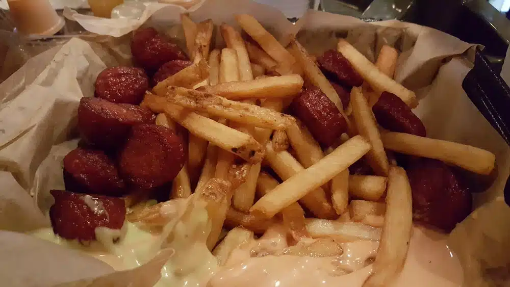
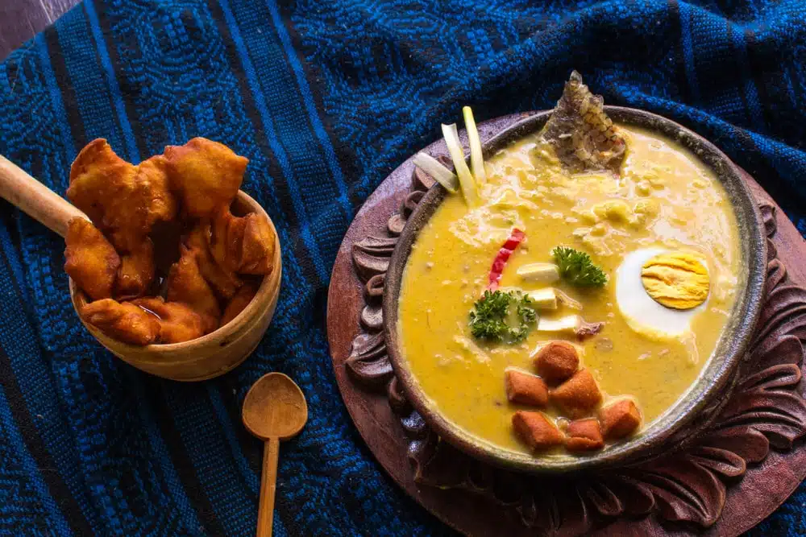
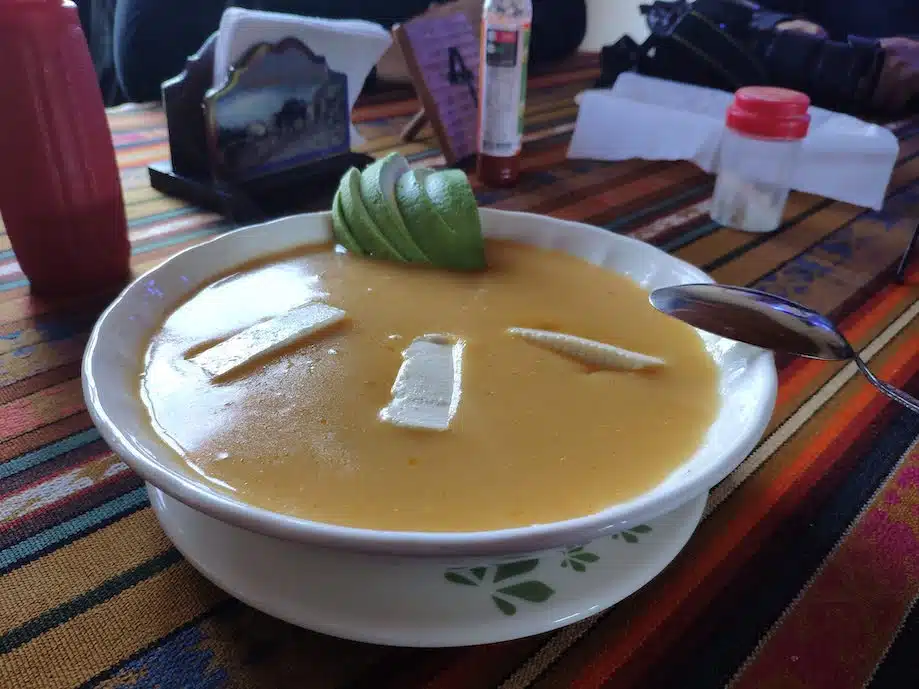

Comidas Típicas do Equador

Papipollo e salchipapa
É papa y pollo. Batata e frango frito, misturados, numa porção de caloria e amor. A salchipapa é igual, mas, em vez de frango, salsicha.

Fanesca
Fanesca também inclui ovos cozidos, legumes como a abóbora, leite, queijo ralado, amendoim, banana da terra e empanadinhas fritas de farinha.

Locro de papas
Trata-se de uma sopa bem concentrada de batata e milho, um dos símbolos da culinária local.